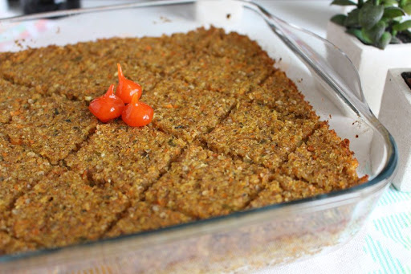

Minhas receitas favoritas
Quem disse que comida vegetariana/vegana é difícil de preparar e sem sabor? Aqui você encontra várias receitas rápidas e deciliosas!
Hambúrguer de grão de bico
Ingredientes
- 2 xícaras de grão de bico
- Óleo/Azeite
- Farinha de trigo
- 1/2 cebola
- 2 dentes de alho
- Cheiro verde
- Sal
- Páprica picante (opcional)
- Chimichurry (opcional)
Modo de preparo
Coloque 2 xícaras de grão de bico de molho por no mínimo 8 horas antes do preparo da receita, após isso lave o bem e coloque para cozinhar na panela de pressão por aproximadamente 20 minutos ou até que o grão esteja cozido. Em seguida amasse o grão de bico até que ele forme uma textura pastosa e reserve.
Em uma frigideira coloque óleo, corte alho e cebola em pedaços pequenos e refogue até dourar. Despeje o alho e a cebola no grão de bico amassado e coloque sal, cheiro verde e temperos a gosto (a páprica picante e o chimichurry dão um toque especial a receita). Misture bem e adicione duas colheres de farinha de trigo para dar liga na massa, mexa até dar o ponto de montar os hambúrgueres. Rende em torno de 10 hambúrgueres.
Quibe de lentilha de forno

Ingredientes
- 1 xícara de lentilha
- 1 xícaras de proteína texturizada de soja
- 1 1/2 xícara de trigo para quibe
- 1/2 xícara de aveia em flocos
- 2 dentes de alho picados
- 1 cebola picada
- 5 colheres de azeite
- Hortelã a gosto
- Orégano a gosto
- Cheiro verde a gosto
Modo de preparo
Hidrate a lentilha e o trigo para quibe em 3 xícaras de água por 1 hora, hidrate a proteína de soja em 2 xícaras de água por 20 minutos e por fim hidrate a aveia em flocos em 1/2 xícara de água (não escorrer). Em seguida cozinhe a lentilha em água com sal, escorra e reserve. Em uma frigideira coloque 5 colheres de azeite na panela, refogue o alho e a cebola até dourar. Após isso junte a lentilha, proteína de soja e os temperos (sal, orégano, cheiro verde, hortelã), adicione também a mistura de aveia e agua e o trigo para kibe ja escorrido. Mexa bem e coloque em uma forma e leve ao forno pré aquecido por 30 minutos. Rende 6 porções.
Torta de legumes
Ingredientes
massa
- 1/2 xícara de óleo
- 2 xícaras de água
- 1 colher de chá de sal
- 3 xícaras de farinha de trigo
- 1 pitada de cúrcuma
- 1 colher de sopa de fermento
Recheio
- 1 cebola
- 2 dentes de alho
- 1 cenoura ralada
- Milho verde
- Ervilha
- 1 abobrinha
- Grão de bico cozido
- 2 tomates
- Azeitonas
- Espinafre
Modo de preparo (massa)
Bata no liquidificador água, óleo, sal, cúrcuma e a farinha de trigo. Em seguida transfira a massa para um recipiente e adicione o fermento, mexa bem.
Modo de preparo (recheio)
Corte os legumes/verduras (retire as sementes do tomate) e coloque-os em um reciepiente grande, adicione o grão de bico cozido, milho verde, ervilha e azeitonas e tempere a gosto.
Em uma forma espalhe metade da massa, coloque o recheio e cubra com a camada restante da massa. Leve ao forno pré-aquecido por 30 minutos.